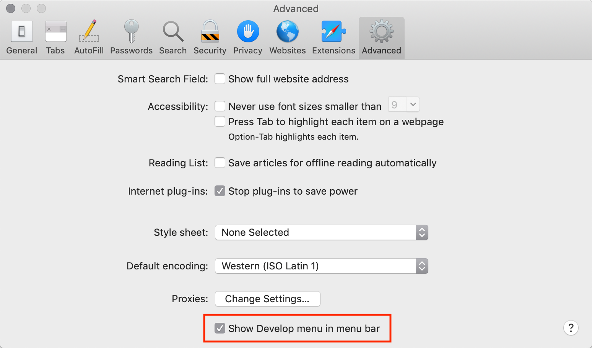

Firefox, Edge и другие
Инструменты разработчика в большинстве браузеров открываются при нажатии на F12.
Их внешний вид и принципы работы мало чем отличаются. Разобравшись с инструментами в одном браузере, вы без труда сможете работать с ними и в другом.
Safari
Safari (браузер для Mac, не поддерживается в системах Windows/Linux) всё же имеет небольшое отличие. Для начала работы нам нужно включить «Меню разработки» («Developer menu»).
Откройте Настройки (Preferences) и перейдите к панели «Продвинутые» (Advanced). В самом низу вы найдёте чекбокс:
Теперь консоль можно активировать нажатием клавиш Cmd+Opt+C. Также обратите внимание на новый элемент меню «Разработка» («Develop»). В нем содержится большое количество команд и настроек.